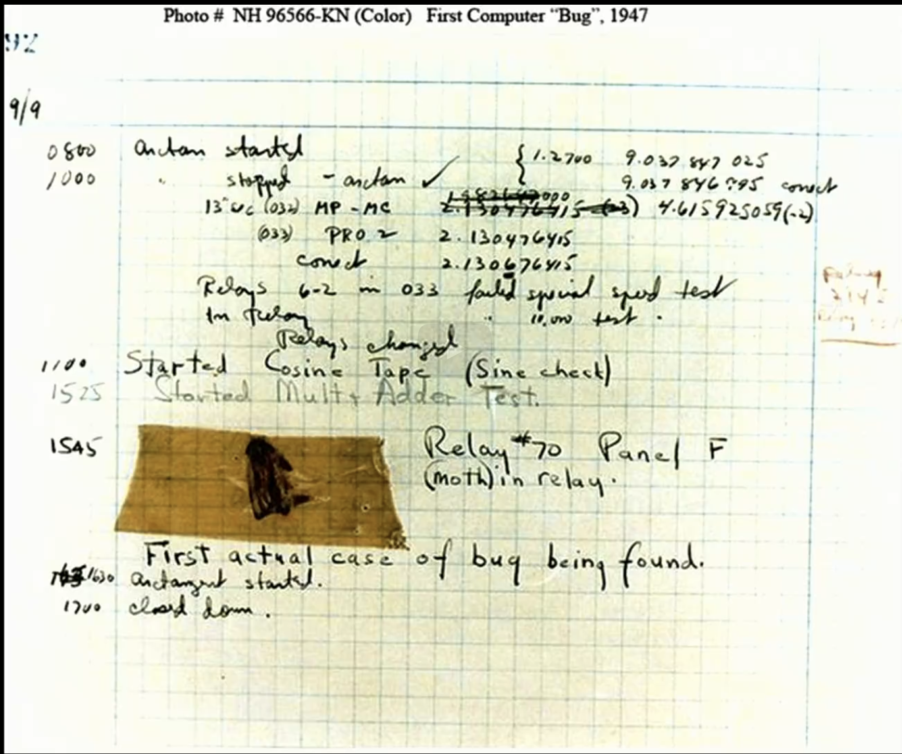

Services
Contact
Tutorials
The first known computer bug was a real bug (an insect) stuck in the electronics.
In JavaScript, Objects are king. If you understand objects, you understand JavaScript.
On January 19 2038. We will have run out of bits in most computers to keep track of time.
Reason: It turns out, years ago, humans decided to use a 32-bit integer to keep track of
how many seconds had elapsed overtime. They chose a somewhat arbitrary date in the past
January 01, 1970. And they just started counting seconds from there on out. So if a computer stores
some number of seconds, that tells the computer how many seconds have passed since that particular date,
January 01, 1970. Unfortunately, using a 32-bit integer, you can only count so high, at which point,
you overflow the size of that variable.
And so potentially, if we don't get ahead of this as humans, as a society, as computer scientists, on the date
January 19, 2038, that bit might flip over, thereby overflowing the size of those integers, bringing us back
computationally to December 13, 1901.